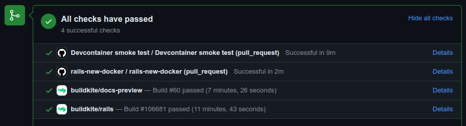
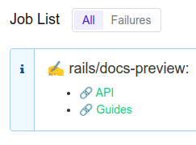

DO NOT READ THIS FILE ON GITHUB, GUIDES ARE PUBLISHED ON https://guides.rubyonrails.org.
Contributing to Ruby on Rails
This guide covers how you can become a part of the ongoing development of Ruby on Rails.
After reading this guide, you will know:
- How to use GitHub to report issues.
- How to clone main and run the test suite.
- How to help resolve existing issues.
- How to contribute to the Ruby on
Railsdocumentation. - How to contribute to the Ruby on
Railscode.
Ruby on Rails is not "someone else's framework". Over the years, thousands of people have contributed to Ruby on Rails ranging from a single character to massive architectural changes or significant documentation - all to make Ruby on Rails better for everyone. Even if you don't feel up to writing code or documentation yet, there are various other ways that you can contribute, from reporting issues to testing patches.
As mentioned in [Rails'
README]), everyone interacting in Rails and its sub-projects' codebases, issue trackers, chat rooms, discussion boards, and mailing lists is expected to follow the Rails code of conduct.
Reporting an Issue
Ruby on Rails uses GitHub Issue Tracking to track issues (primarily bugs and contributions of new code). If you've found a bug in Ruby on Rails, this is the place to start. You'll need to create a (free) GitHub account to submit an issue, comment on issues, or create pull requests.
NOTE: Bugs in the most recent released version of Ruby on Rails will likely get the most attention. Additionally, the Rails core team is always interested in feedback from those who can take the time to test edge Rails (the code for the version of Rails that is currently under development). Later in this guide, you'll find out how to get edge Rails for testing. See our maintenance policy for information on which versions are supported. Never report a security issue on the GitHub issues tracker.
Creating a Bug Report
If you've found a problem in Ruby on Rails that is not a security risk, search the Issues on GitHub, in case it has already been reported. If you cannot find any open GitHub issues addressing the problem you found, your next step will be to open a new issue. (See the next section for reporting security issues.)
We've provided an issue template for you so that when creating an issue you include all the information needed to determine whether there is a bug in the framework. Each issue needs to include a title and clear description of the problem. Make sure to include as much relevant information as possible, including a code sample or failing test that demonstrates the expected behavior, as well as your system configuration. Your goal should be to make it easy for yourself - and others - to reproduce the bug and figure out a fix.
Once you open an issue, it may or may not see activity right away unless it is a "Code Red, Mission Critical, the World is Coming to an End" kind of bug. That doesn't mean we don't care about your bug, just that there are a lot of issues and pull requests to get through. Other people with the same problem can find your issue, and confirm the bug, and may collaborate with you on fixing it. If you know how to fix the bug, go ahead and open a pull request.
Create an Executable Test Case
Having a way to reproduce your issue will help people confirm, investigate, and ultimately fix your issue. You can do this by providing an executable test case. To make this process easier, we have prepared several bug report templates for you to use as a starting point:
- Template for Active Record (models, database) issues: link
- Template for testing Active Record (migration) issues: link
- Template for Action Pack (controllers, routing) issues: link
- Template for Action View (views, helpers) issues: link
- Template for Active Job issues: link
- Template for Active Storage issues: link
- Template for Action Mailer issues: link
- Template for Action Mailbox issues: link
- Generic template for other issues: link
These templates include the boilerplate code to set up a test case. Copy the content of the appropriate template into a .rb file and make the necessary changes to demonstrate the issue. You can execute it by running ruby the_file.rb in your terminal. If all goes well, you should see your test case failing.
You can then share your executable test case as a gist or paste the content into the issue description.
Special Treatment for Security Issues
WARNING: Please do not report security vulnerabilities with public GitHub issue reports. The Rails security policy page details the procedure to follow for security issues.
What about Feature Requests?
Please don't put "feature request" items into GitHub Issues. If there's a new
feature that you want to see added to Ruby on Rails, you'll need to write the
code yourself - or convince someone else to partner with you to write the code.
Later in this guide, you'll find detailed instructions for proposing a patch to
Ruby on Rails. If you enter a wish list item in GitHub Issues with no code, you
can expect it to be marked "invalid" as soon as it's reviewed.
Sometimes, the line between 'bug' and 'feature' is a hard one to draw. Generally, a feature is anything that adds new behavior, while a bug is anything that causes incorrect behavior. Sometimes, the Core team will have to make a judgment call. That said, the distinction generally determines which patch your change is released with; we love feature submissions! They just won't get backported to maintenance branches.
If you'd like feedback on an idea for a feature before doing the work to make a patch, please start a discussion on the rails-core discussion board. You might get no response, which means that everyone is indifferent. You might find someone who's also interested in building that feature. You might get a "This won't be accepted". But it's the proper place to discuss new ideas. GitHub Issues are not a particularly good venue for the sometimes long and involved discussions new features require.
Helping to Resolve Existing Issues
Beyond reporting issues, you can help the core team resolve existing ones by providing feedback about them. If you are new to Rails core development, providing feedback will help you get familiar with the codebase and the processes.
If you check the issues list in GitHub Issues, you'll find lots of issues already requiring attention. What can you do about these? Quite a bit, actually:
Verifying Bug Reports
For starters, it helps just to verify bug reports. Can you reproduce the reported issue on your computer? If so, you can add a comment to the issue saying that you're seeing the same thing.
If an issue is very vague, can you help narrow it down to something more specific? Maybe you can provide additional information to reproduce the bug, or maybe you can eliminate unnecessary steps that aren't required to demonstrate the problem.
If you find a bug report without a test, it's very useful to contribute a failing test. This is also a great way to explore the source code: looking at the existing test files will teach you how to write more tests. New tests are best contributed in the form of a patch, as explained later on in the Contributing to the Rails Code section.
Anything you can do to make bug reports more succinct or easier to reproduce helps folks trying to write code to fix those bugs - whether you end up writing the code yourself or not.
Testing Patches
You can also help out by examining pull requests that have been submitted to Ruby on Rails via GitHub. In order to apply someone's changes, first create a dedicated branch:
$ git checkout -b testing_branch
Then, you can use their remote branch to update your codebase. For example, let's say the GitHub user JohnSmith has forked and pushed to a topic branch "orange" located at https://github.com/JohnSmith/rails.
$ git remote add JohnSmith https://github.com/JohnSmith/rails.git
$ git pull JohnSmith orange
An alternative to adding their remote to your checkout is to use the GitHub CLI tool to checkout their pull request.
After applying their branch, test it out! Here are some things to think about:
- Does the change actually work?
- Are you happy with the tests? Can you follow what they're testing? Are there any tests missing?
- Does it have the proper documentation coverage? Should documentation elsewhere be updated?
- Do you like the implementation? Can you think of a nicer or faster way to implement a part of their change?
Once you're happy that the pull request contains a good change, comment on the GitHub issue indicating your findings. Your comment should indicate that you like the change and what you like about it. Something like:
I like the way you've restructured that code in generate_finder_sql - much nicer. The tests look good too.
If your comment simply reads "+1", then odds are that other reviewers aren't going to take it too seriously. Show that you took the time to review the pull request.
Contributing to the Rails Documentation
Ruby on Rails has two main sets of documentation: the guides, which help you learn about Ruby on Rails, and the API, which serves as a reference.
You can help improve the Rails guides or the API reference by making them more coherent, consistent, or readable, adding missing information, correcting factual errors, fixing typos, or bringing them up to date with the latest edge Rails.
To do so, make changes to Rails guides source files (located here on GitHub) or RDoc comments in source code. Then open a pull request to apply your changes to the main branch.
Use [ci skip] in your pull request title to avoid running the CI build for documentation changes.
Once you open a PR, a preview of the documentation will be deployed for easy review and collaboration. At the bottom of the Pull Request page, you should see a list of status checks, look for the buildkite/docs-preview and click "details".

This will bring you to the Buildkite build page, if the job was successful there will be an annotation with links to the generated API and Guides above the job list.

When working with documentation, please take into account the API Documentation Guidelines and the Ruby on Rails Guides Guidelines.
Translating Rails Guides
We are happy to have people volunteer to translate the Rails guides. Just follow these steps:
- Fork https://github.com/rails/rails.
- Add a source folder for your language, for example: guides/source/it-IT for Italian.
- Copy the contents of guides/source into your language directory and translate them.
- Do NOT translate the HTML files, as they are automatically generated.
Note that translations are not submitted to the Rails repository; your work lives in your fork, as described above. This is because, in practice, documentation maintenance via patches is only sustainable in English.
To generate the guides in HTML format, you will need to install the guides dependencies, cd into the guides directory, and then run (e.g., for it-IT):
# only install gems necessary for the guides. To undo run: bundle config --delete without
$ bundle install --without job cable storage test db
$ cd guides/
$ bundle exec rake guides:generate:html GUIDES_LANGUAGE=it-IT
This will generate the guides in an output directory.
NOTE: The Redcarpet Gem doesn't work with JRuby.
Contributing to the Rails Code
Setting Up a Development Environment
To move on from submitting bugs to helping resolve existing issues or contributing your own code to Ruby on Rails, you must be able to run its test suite. In this section of the guide, you'll learn how to set up the tests on your computer.
Using GitHub Codespaces
If you're a member of an organization that has codespaces enabled, you can fork Rails into that organization and use codespaces on GitHub. The Codespace will be initialized with all required dependencies and allows you to run all tests.
Using VS Code Remote Containers
If you have Visual Studio Code and Docker installed, you can use the VS Code remote containers plugin. The plugin will read the .devcontainer configuration in the repository and build the Docker container locally.
Using Dev Container CLI
Alternatively, with Docker and npm installed, you can run Dev Container CLI to utilize the .devcontainer configuration from the command line.
$ npm install -g @devcontainers/cli
$ cd rails
$ devcontainer up --workspace-folder .
$ devcontainer exec --workspace-folder . bash
Using rails-dev-box
It's also possible to use the rails-dev-box to get a development environment ready. However, the rails-dev-box uses Vagrant and Virtual Box which will not work on Macs with Apple silicon.
Local Development
When you can't use GitHub Codespaces, see this other guide for how to set up local development. This is considered the hard way because installing dependencies may be OS specific.
Clone the Rails Repository
To be able to contribute code, you need to clone the Rails repository:
$ git clone https://github.com/rails/rails.git
and create a dedicated branch:
$ cd rails
$ git checkout -b my_new_branch
It doesn't matter much what name you use because this branch will only exist on your local computer and your personal repository on GitHub. It won't be part of the Rails Git repository.
Bundle install
Install the required gems.
$ bundle install
Running an Application Against Your Local Branch
In case you need a dummy Rails app to test changes, the --dev flag of rails new generates an application that uses your local branch:
$ cd rails
$ bundle exec rails new ~/my-test-app --dev
The application generated in ~/my-test-app runs against your local branch
and, in particular, sees any modifications upon server reboot.
For JavaScript packages, you can use yarn link to source your local branch in a generated application:
$ cd rails/activestorage
$ yarn link
$ cd ~/my-test-app
$ yarn link "@rails/activestorage"
Write Your Code
Now it's time to write some code! When making changes for Rails, here are some things to keep in mind:
- Follow Rails style and conventions.
- Use Rails idioms and helpers.
- Include tests that fail without your code, and pass with it.
- Update the (surrounding) documentation, examples elsewhere, and the guides: whatever is affected by your contribution.
- If the change adds, removes, or changes a feature, be sure to include a CHANGELOG entry. If your change is a bug fix, a CHANGELOG entry is not necessary.
TIP: Changes that are cosmetic and do not add anything substantial to the stability, functionality, or testability of Rails will generally not be accepted (read more about our rationale behind this decision).
Follow the Coding Conventions
Rails follows a simple set of coding style conventions:
- Two spaces, no tabs (for indentation).
- No trailing whitespace. Blank lines should not have any spaces.
- Indent and no blank line after private/protected.
- Use Ruby >= 1.9 syntax for hashes. Prefer
{ a: :b }over{ :a => :b }. - Prefer
&&/||overand/or. - Prefer
class << selfoverself.methodfor class methods. - Use
my_method(my_arg)notmy_method( my_arg )ormy_method my_arg. - Use
a = band nota=b. - Use
assert_notmethods instead ofrefute. - Prefer
method { do_stuff }instead ofmethod{do_stuff}for single-line blocks. - Follow the conventions in the source you see used already.
The above are guidelines - please use your best judgment in using them.
Additionally, we have RuboCop rules defined to codify some of our coding conventions. You can run RuboCop locally against the file that you have modified before submitting a pull request:
$ bundle exec rubocop actionpack/lib/action_controller/metal/strong_parameters.rb
Inspecting 1 file
.
1 file inspected, no offenses detected
Benchmark Your Code
For changes that might have an impact on performance, please benchmark your code and measure the impact. Please share the benchmark script you used as well as the results. You should consider including this information in your commit message, to allow future contributors to easily verify your findings and determine if they are still relevant. (For example, future optimizations in the Ruby VM might render certain optimizations unnecessary.)
When optimizing for a specific scenario that you care about, it is easy to regress performance for other common cases. Therefore, you should test your change against a list of representative scenarios, ideally extracted from real-world production applications.
You can use the benchmark template as a starting point. It includes the boilerplate code to set up a benchmark using the benchmark-ips gem. The template is designed for testing relatively self-contained changes that can be inlined into the script.
Running Tests
It is not customary in Rails to run the full test suite before pushing
changes. The railties test suite, in particular, takes a long time, and will take an
especially long time if the source code is mounted in /vagrant as happens in
the recommended workflow with the rails-dev-box.
As a compromise, test what your code obviously affects, and if the change is not in railties, run the whole test suite of the affected component. If all tests are passing, that's enough to propose your contribution. We have Buildkite as a safety net for catching unexpected breakages elsewhere.
Entire Rails:
To run all the tests, do:
$ cd rails
$ bundle exec rake test
For a Particular Component
You can run tests only for a particular component (e.g., Action Pack). For example, to run Action Mailer tests:
$ cd actionmailer
$ bin/test
For a Specific Directory
You can run tests only for a specific directory of a particular component
(e.g., models in Active Storage). For example, to run tests in /activestorage/test/models:
$ cd activestorage
$ bin/test models
For a Specific File
You can run the tests for a particular file:
$ cd actionview
$ bin/test test/template/form_helper_test.rb
Running a Single Test
You can run a single test by name using the -n option:
$ cd actionmailer
$ bin/test test/mail_layout_test.rb -n test_explicit_class_layout
For a Specific Line
Figuring out the name is not always easy, but if you know the line number your test starts at, this option is for you:
$ cd railties
$ bin/test test/application/asset_debugging_test.rb:69
Running Tests with a Specific Seed
Test execution is randomized with a randomization seed. If you are experiencing random test failures, you can more accurately reproduce a failing test scenario by specifically setting the randomization seed.
Running all tests for a component:
$ cd actionmailer
$ SEED=15002 bin/test
Running a single test file:
$ cd actionmailer
$ SEED=15002 bin/test test/mail_layout_test.rb
Running Tests in Serial
Action Pack and Action View unit tests run in parallel by default. If you are experiencing random
test failures, you can set the randomization seed and let these unit tests run in serial by setting PARALLEL_WORKERS=1
$ cd actionview
$ PARALLEL_WORKERS=1 SEED=53708 bin/test test/template/test_case_test.rb
Testing Active Record
First, create the databases you'll need. You can find a list of the required
table names, usernames, and passwords in activerecord/test/config.example.yml.
For MySQL and PostgreSQL, it is sufficient to run:
$ cd activerecord
$ bundle exec rake db:mysql:build
Or:
$ cd activerecord
$ bundle exec rake db:postgresql:build
This is not necessary for SQLite3.
This is how you run the Active Record test suite only for SQLite3:
$ cd activerecord
$ bundle exec rake test:sqlite3
You can now run the tests as you did for sqlite3. The tasks are respectively:
$ bundle exec rake test:mysql2
$ bundle exec rake test:trilogy
$ bundle exec rake test:postgresql
Finally,
$ bundle exec rake test
will now run the three of them in turn.
You can also run any single test separately:
$ ARCONN=mysql2 bundle exec ruby -Itest test/cases/associations/has_many_associations_test.rb
To run a single test against all adapters, use:
$ bundle exec rake TEST=test/cases/associations/has_many_associations_test.rb
You can invoke test_jdbcmysql, test_jdbcsqlite3 or test_jdbcpostgresql also. See the file activerecord/RUNNING_UNIT_TESTS.rdoc for information on running more targeted database tests.
Using Debuggers with Test
To use an external debugger (pry, byebug, etc), install the debugger and use it as normal. If debugger issues occur, run tests in serial by setting PARALLEL_WORKERS=1 or run a single test with -n test_long_test_name.
If running tests against generators you will need to set RAILS_LOG_TO_STDOUT=true in order for debugging tools to work.
RAILS_LOG_TO_STDOUT=true ./bin/test test/generators/actions_test.rb
Warnings
The test suite runs with warnings enabled. Ideally, Ruby on Rails should issue no warnings, but there may be a few, as well as some from third-party libraries. Please ignore (or fix!) them, if any, and submit patches that do not issue new warnings.
Rails CI will raise if warnings are introduced. To implement the same behavior locally set RAILS_STRICT_WARNINGS=1 when running the test suite.
Updating the Documentation
The Ruby on Rails guides provide a high-level overview of Rails' features, while the API documentation delves into specifics.
If your PR adds a new feature, or changes how an existing feature behaves, check the relevant documentation, and update it or add to it as necessary.
For example, if you modify Active Storage's image analyzer to add a new metadata field, you should update the Analyzing Files section of the Active Storage guide to reflect that.
Updating the CHANGELOG
The CHANGELOG is an important part of every release. It keeps the list of changes for every Rails version.
You should add an entry to the top of the CHANGELOG of the framework you modified if you're adding or removing a feature, or adding deprecation notices. Refactorings, minor bug fixes, and documentation changes generally should not go to the CHANGELOG.
A CHANGELOG entry should summarize what was changed and should end with the author's name. You can use multiple lines if you need more space, and you can attach code examples indented with 4 spaces. If a change is related to a specific issue, you should attach the issue's number. Here is an example CHANGELOG entry:
* Summary of a change that briefly describes what was changed. You can use multiple
lines and wrap them at around 80 characters. Code examples are ok, too, if needed:
class Foo
def bar
puts 'baz'
end
end
You can continue after the code example, and you can attach the issue number.
Fixes #1234.
*Your Name*
Breaking Changes
Anytime a change could break existing applications it's considered a breaking change. To ease upgrading Rails applications, breaking changes require a deprecation cycle.
Removing Behavior
If your breaking change removes existing behavior, you'll first need to add a deprecation warning while keeping the existing behavior.
As an example, let's say you want to remove a public method on
::ActiveRecord::Base. If the main branch points to the unreleased 7.0 version,
Rails 7.0 will need to show a deprecation warning. This makes sure anyone
upgrading to any Rails 7.0 version will see the deprecation warning.
In Rails 7.1 the method can be deleted.
You could add the following deprecation warning:
def deprecated_method
ActiveRecord.deprecator.warn(<<-MSG.squish)
{ActiveRecord::Base.deprecated_method} is deprecated and will be removed in Rails 7.1.
MSG
# Existing behavior
endChanging Behavior
If your breaking change changes existing behavior, you'll need to add a framework default. Framework defaults ease Rails upgrades by allowing apps to switch to the new defaults one by one.
To implement a new framework default, first create a configuration by adding an accessor on the target framework. Set the default value to the existing behavior to make sure nothing breaks during an upgrade.
module ActiveJob
mattr_accessor :existing_behavior, default: true
endThe new configuration allows you to conditionally implement the new behavior:
def changed_method
if ActiveJob.existing_behavior
# Existing behavior
else
# New behavior
end
endTo set the new framework default, set the new value in Rails::Application::Configuration#load_defaults:
def load_defaults(target_version)
case target_version.to_s
when "7.1"
# ...
if respond_to?(:active_job)
active_job.existing_behavior = false
end
# ...
end
endTo ease the upgrade it's required to add the new default to the
new_framework_defaults template. Add a commented out section, setting the new
value:
# new_framework_defaults_7_2.rb.tt
# Rails.application.config.active_job.existing_behavior = falseAs a last step add the new configuration to configuration guide in
configuration.md:
#### `config.active_job.existing_behavior
| Starting with version | The default value is |
| --------------------- | -------------------- |
| (original) | `true` |
| 7.1 | `false` |
Ignoring Files Created by Your Editor / IDE
Some editors and IDEs will create hidden files or folders inside the rails folder. Instead of manually excluding those from each commit or adding them to Rails' .gitignore, you should add them to your own global gitignore file.
Updating the Gemfile.lock
Some changes require dependency upgrades. In these cases, make sure you run bundle update to get the correct version of the dependency and commit the Gemfile.lock file within your changes.
Commit Your Changes
When you're happy with the code on your computer, you need to commit the changes to Git:
$ git commit -a
This should fire up your editor to write a commit message. When you have finished, save, and close to continue.
A well-formatted and descriptive commit message is very helpful to others for understanding why the change was made, so please take the time to write it.
A good commit message looks like this:
Short summary (ideally 50 characters or less)
More detailed description, if necessary. Each line should wrap at
72 characters. Try to be as descriptive as you can. Even if you
think that the commit content is obvious, it may not be obvious
to others. Add any description that is already present in the
relevant issues; it should not be necessary to visit a webpage
to check the history.
The description section can have multiple paragraphs.
Code examples can be embedded by indenting them with 4 spaces:
class ArticlesController
def index
render json: Article.limit(10)
end
end
You can also add bullet points:
- make a bullet point by starting a line with either a dash (-)
or an asterisk (*)
- wrap lines at 72 characters, and indent any additional lines
with 2 spaces for readability
TIP. Please squash your commits into a single commit when appropriate. This simplifies future cherry picks and keeps the git log clean.
Update Your Branch
It's pretty likely that other changes to main have happened while you were working. To get new changes in main:
$ git checkout main
$ git pull --rebase
Now reapply your patch on top of the latest changes:
$ git checkout my_new_branch
$ git rebase main
No conflicts? Tests still pass? Change still seems reasonable to you? Then push the rebased changes to GitHub:
$ git push --force-with-lease
We disallow force pushing on the rails/rails repository base, but you are able to force push to your fork. When rebasing this is a requirement since the history has changed.
Fork
Navigate to the Rails GitHub repository and press "Fork" in the upper right-hand corner.
Add the new remote to your local repository on your local machine:
$ git remote add fork https://github.com/<your username>/rails.git
You may have cloned your local repository from rails/rails, or you may have cloned from your forked repository. The following git commands assume that you have made a "rails" remote that points to rails/rails.
$ git remote add rails https://github.com/rails/rails.git
Download new commits and branches from the official repository:
$ git fetch rails
Merge the new content:
$ git checkout main
$ git rebase rails/main
$ git checkout my_new_branch
$ git rebase rails/main
Update your fork:
$ git push fork main
$ git push fork my_new_branch
Open a Pull Request
Navigate to the Rails repository you just pushed to (e.g. https://github.com/your-user-name/rails) and click on "Pull Requests" in the top bar (just above the code). On the next page, click "New pull request" in the upper right-hand corner.
The pull request should target the base repository rails/rails and the branch main.
The head repository will be your work (your-user-name/rails), and the branch will be
whatever name you gave your branch. Click "create pull request" when you're ready.
Ensure the changesets you introduced are included. Fill in some details about your potential patch, using the pull request template provided. When finished, click "Create pull request".
Get Some Feedback
Most pull requests will go through a few iterations before they get merged. Different contributors will sometimes have different opinions, and often patches will need to be revised before they can get merged.
Some contributors to Rails have email notifications from GitHub turned on, but others do not. Furthermore, (almost) everyone who works on Rails is a volunteer, and so it may take a few days for you to get your first feedback on a pull request. Don't despair! Sometimes it's quick; sometimes it's slow. Such is the open source life.
If it's been over a week, and you haven't heard anything, you might want to try and nudge things along. You can use the contributions channel in the Ruby on Rails Discord server, or the rubyonrails-core discussion board for this. You can also leave another comment on the pull request. It's best to avoid pinging individual maintainers directly as we have limited bandwidth and may not be able to look at your PR.
While you're waiting for feedback on your pull request, open up a few other pull requests and give someone else some! They'll appreciate it in the same way that you appreciate feedback on your patches.
Note that only the Core and Committers teams are permitted to merge code changes. If someone gives feedback and "approves" your changes, they may not have the ability or final say to merge your change.
Iterate as Necessary
It's entirely possible that the feedback you get will suggest changes. Don't get discouraged: the whole point of contributing to an active open source project is to tap into the community's knowledge. If people encourage you to tweak your code, then it's worth making the tweaks and resubmitting. If the feedback is that your code won't be merged, you might still think about releasing it as a gem.
Squashing Commits
One of the things that we may ask you to do is to "squash your commits", which will combine all of your commits into a single commit. We prefer pull requests that are a single commit. This makes it easier to backport changes to stable branches, squashing makes it easier to revert bad commits, and the git history can be a bit easier to follow. Rails is a large project, and a bunch of extraneous commits can add a lot of noise.
$ git fetch rails
$ git checkout my_new_branch
$ git rebase -i rails/main
< Choose 'squash' for all of your commits except the first one. >
< Edit the commit message to make sense, and describe all your changes. >
$ git push fork my_new_branch --force-with-lease
You should be able to refresh the pull request on GitHub and see that it has been updated.
Updating a Pull Request
Sometimes you will be asked to make some changes to the code you have already committed. This can include amending existing commits. In this case Git will not allow you to push the changes as the pushed branch and local branch do not match. Instead of opening a new pull request, you can force push to your branch on GitHub as described earlier in squashing commits section:
$ git commit --amend
$ git push fork my_new_branch --force-with-lease
This will update the branch and pull request on GitHub with your new code.
By force pushing with --force-with-lease, git will more safely update
the remote than with a typical -f, which can delete work from the remote
that you don't already have.
Older Versions of Ruby on Rails
If you want to add a fix to versions of Ruby on Rails older than the next release, you'll need to set up and switch to your own local tracking branch. Here is an example to switch to the 7-0-stable branch:
$ git branch --track 7-0-stable rails/7-0-stable
$ git checkout 7-0-stable
NOTE: Before working on older versions, please check the maintenance policy. Changes will not be accepted to versions that have reached end of life.
Backporting
Changes that are merged into main are intended for the next major release of Rails. Sometimes, it might be beneficial to propagate your changes back to stable branches for inclusion in maintenance releases. Generally, security fixes and bug fixes are good candidates for a backport, while new features and patches that change expected behavior will not be accepted. When in doubt, it is best to consult a Rails team member before backporting your changes to avoid wasted effort.
First, make sure your main branch is up to date.
$ git checkout main
$ git pull --rebase
Check out the branch you're backporting to, for example, 7-0-stable and make sure it's up to date:
$ git checkout 7-0-stable
$ git reset --hard origin/7-0-stable
$ git checkout -b my-backport-branch
If you're backporting a merged pull request, find the commit for the merge and cherry-pick it:
$ git cherry-pick -m1 MERGE_SHA
Fix any conflicts that occurred in the cherry-pick, push your changes, then open a PR pointing at the stable branch you're backporting to. If you have a more complex set of changes, the cherry-pick documentation can help.
Rails Contributors
All contributions get credit in Rails Contributors.